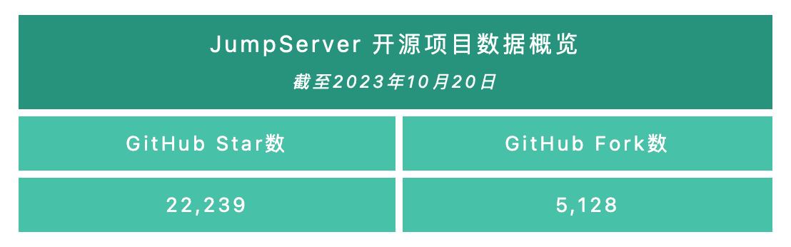
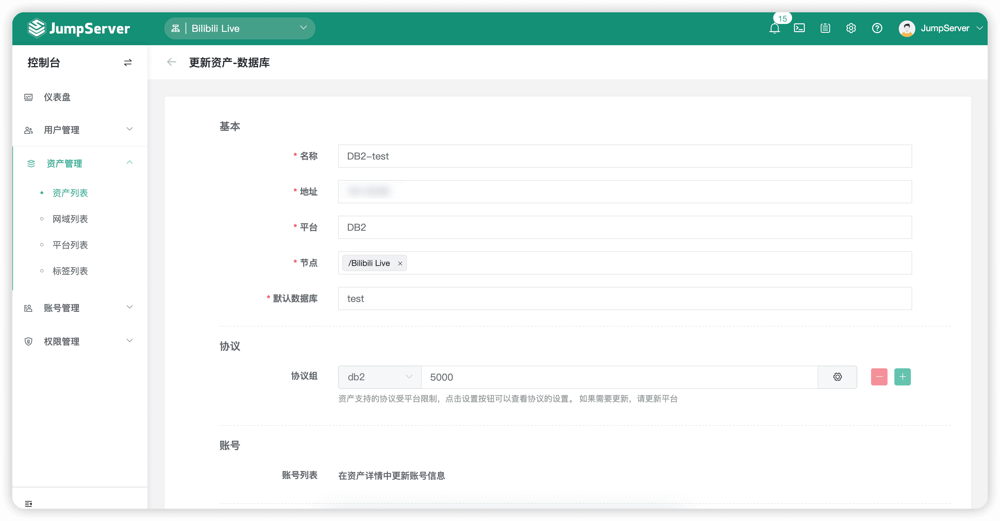
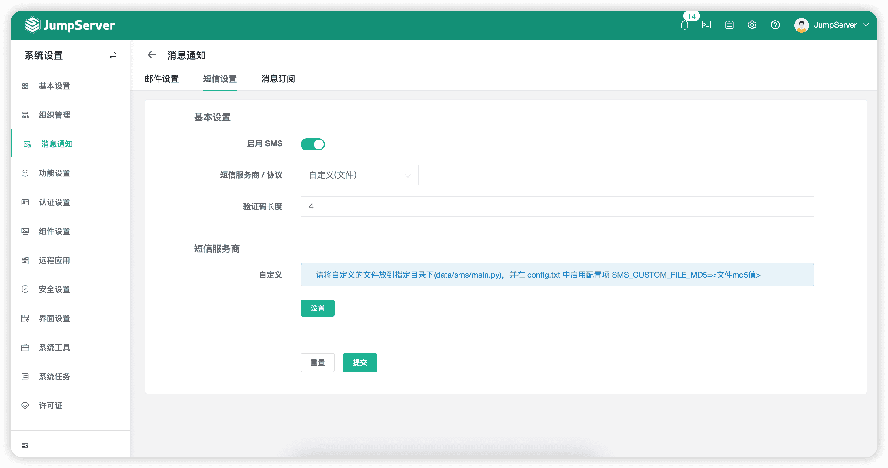
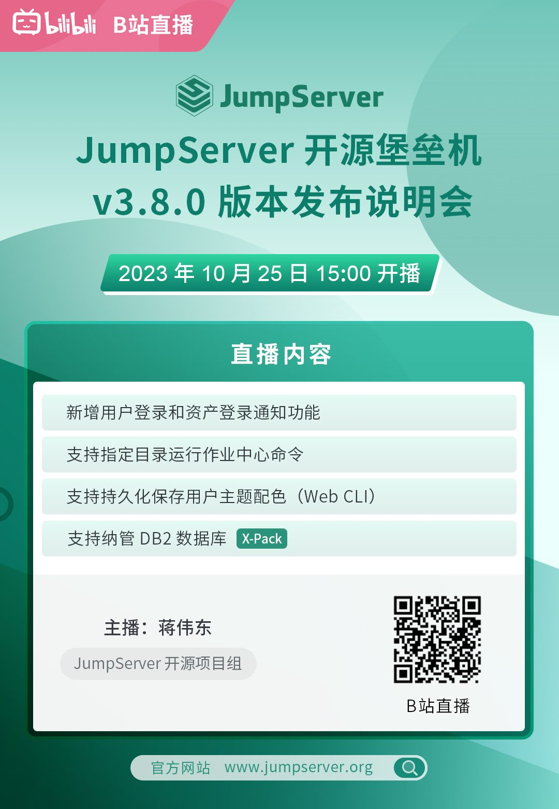

2023年10月23日，JumpServer开源堡垒机正式发布v3.8.0版本。在这一版本中，JumpServer在“用户登录”和“资产登录”这两个权限控制功能中，新增“通知”动作。目前其支持的动作包括拒绝、接受、审批以及通知四种动作，方便了管理员针对不同的用户及资产使用需求进行配置。同时，在使用KoKo组件连接字符集类型的资产时，JumpServer支持持久化主题配置，解决了用户需要经常手动修改主题的问题。作业中心方面，用户执行命令时支持自定义执行目录，方便用户在合适的上下文环境中执行命令。另外，在使用Web GUI方式连接数据库时，用户可以对查询集进行保存操作，JumpServer会对查询集以“CSV”格式下载后提供给用户。
X-Pack增强包方面，JumpServer v3.8.0版本支持纳管DB2数据库（IBM旗下关系型数据库），方便管理员对此类数据库进行纳管，以满足用户在数据库纳管方面的多样化需求。在之前的版本中，JumpServer支持在页面上简单对接无认证类型的短信网关。在新版本中，JumpServer支持用户通过编写自定义短信文件的方式，与用户的短信网关环境进行交互，从而实现发送短信验证的功能。
新增功能
1. 新增用户登录通知功能
在JumpServer v3.8.0版本中，新增用户登录通知功能。管理员可以选择“权限管理”→“用户登录”进行配置，配置完成后登录JumpServer即会触发相应的控制策略。目前，JumpServer支持的策略包括拒绝、接受、审批和通知。

▲ 图1 新增用户登录通知功能（配置界面）▲ 图2 新增用户登录通知功能（通知界面）
2. 新增资产登录通知功能
在JumpServer v3.8.0版本中，新增资产登录通知功能。管理员可以选择“权限管理”→“资产登录”进行配置，配置完成后登录资产即会触发相应的策略。目前，JumpServer支持的策略包括拒绝、接受、审批和通知。
▲ 图3 新增资产登录通知功能（配置界面）
▲ 图4 新增资产登录通知功能（通知界面）
3. 支持指定目录运行作业中心命令
在JumpServer v3.8.0版本中，用户在“作业中心”中执行命令时，支持自定义执行目录，方便用户在合适的上下文环境中执行命令。
▲ 图5 支持指定目录运行作业中心命令
4. 支持持久化保存用户主题配色（Web CLI）（KoKo组件）
在JumpServer v3.8.0版本中，在对KoKo进行主题设置时，用户可以点击“同步”按钮对主题进行持久化配置。
▲ 图6 支持持久化保存用户主题配色
5. 支持数据库查询集的下载导出功能（Web GUI）（Chen组件）
在JumpServer v3.8.0版本中，用户在使用“Web GUI”的方式连接数据库时，可以将查询的结果集（CSV格式）导出到本地，方便使用者进行其他操作。
▲ 图7 支持数据库查询集的下载导出功能
6. 支持“切换自”账号的改密任务（X-Pack增强包内）
在JumpServer v3.8.0版本中，支持配置“切换自”的账号执行改密计划。“切换自”功能是指某些账号在登录资产时无法直接登录，需要从其他账号切换用户过来。
7. 支持纳管DB2数据库（X-Pack增强包内）
在JumpServer v3.8.0版本中，新增支持纳管DB2数据库，方便管理员对此类数据库进行纳管，以满足用户在数据库纳管方面的多样化需求。
▲ 图8 支持纳管DB2数据库（X-Pack增强包内）
8. 支持自定义短信认证方式（文件方式）（X-Pack增强包内）
为了应对更加灵活的短信认证方式，新版本的JumpServer支持用户通过编写自定义短信文件的方式，与用户的短信网关环境进行交互，达到发送短信验证的功能。

▲ 图9 支持自定义短信认证方式（X-Pack增强包内）功能优化
■ 优化定时记录键盘操作的逻辑（Lion组件）；
■ 新增“Alt+Tab”快捷键（Lion组件）；
■ 通过SSH进行登录时，增加对登录IP的校验（KoKo组件）；
■ 优化在Luna页面进行账号选择时，没有给出提示信息的问题；
■ 优化Luna页面，用户会话过期后，不断开当前的会话，其他操作需要重新登录；
■ 资产授权详情中，已添加的资产不能重复进行添加；
■ 列表搜索框可以使用退格键删除搜索条件；
■ Windows平台的默认账号测试和账号校验均使用RDP方式；
■ 第三方用户扫码绑定后，强制退出进行重新登录；
■ 优化在线用户过期时间的获取逻辑（实时获取）；
■ MySQL、MariaDB的默认数据库字段不再是必填项；
■ 用户Passkey认证方式只允许本地用户使用；
■ 优化“安全设置”→“认证安全”中，配置“OTP延迟有效次数”选项可以为0；
■ 账号模版信息同步更新到所关联的账号，包括名称、用户名、密钥和密钥类型等信息；
■ 任务执行历史默认按照最后执行时间降序排序；
■ 同步更新LDAP用户的用户组信息；
■ 优化验证码校验逻辑，防止被暴力破解（最多失败次数为3次）；
■ 优化账号模版生成随机密码密钥的逻辑；
■ 优化长期未登录用户自动禁用的检测逻辑，通过AK（Access Key ID）/SK（Secret Access Key）、第三方认证后，也视作登录操作，不会自动禁用该用户；
■ 管理员默认邮箱地址为admin@example.com；
■ 随机字符生成方法使用Secrets库，提高安全性；
■ 优化用户登录城市的校验逻辑，避免同城登录误判为异地登录的问题；
■ 优化统一用户操作过程中需要二次确认用户身份的处理逻辑；
■ 未登录用户审批工单时，自动跳转至登录页面（X-Pack增强包内）；
■ 优化Luna页面同名账号和手动输入账号功能，允许下载RDP文件（X-Pack增强包内）；
■ 资产登录被访问控制策略拒绝后，登录行为记录到操作日志（X-Pack增强包内）；
■ 优化账号收集、账号改密、账号备份多次点击执行后，不能正常跳转到执行列表的问题（X-Pack增强包内）。
Bug修复
■ 修复WebSocket超时，断开连接的问题（Chen组件）；
■ 修复通过Web GUI连接数据库查询BigInteger（表字段类型）值时，精度丢失的问题（Chen组件）；
■ 修复执行Screen和Tmux命令后，没有录像的问题（KoKo组件）；
■ 修复Luna页面拖拽会话Tab，导致会话重新连接的问题；
■ 修复“命令过滤”列表中，点击“命令组”选项会跳转到“命令过滤”详情的问题；
■ 修复连接“令牌过期”按钮被禁用的问题；
■ 修复“系统设置”页面中，邮件设置后缀失败的问题；
■ 修复离线会话依然显示在线的问题；
■ 修复第三方用户登录失败的问题；
■ 修复更新资产标签时，资产协议被清空的问题；
■ 修复一些RBAC权限错误导致操作失败的问题；
■ 修复通过账号模版添加资产，“切换自”账号没有同步创建的问题；
■ 修复克隆包含“切换自”的账号时，没有克隆“切换自”账号的问题；
■ 修复更新用户手机号选择“+86”时，保存不生效的问题；
■ 修复节点资产数量计算不准确的问题；
■ 修复资产名称中包含“/”字符，执行Ansible任务失败的问题；
■ 修复更改配置文件中DOMAINS配置项，其中“80”和“443”端口，配置项不生效的问题；
■ 修复找回密码时，手机号增加“+”号导致短信发送失败的问题；
■ 修复短信或MFA验证码校验逻辑和报错信息；
■ 修复账号批量更新时，出现报错的问题；
■ 修复Username包含中文导致登录失败的问题；
■ 修复OpenID用户被禁用后，会循环登录跳转的问题；
■ 修复v2版本升级v3版本时，系统用户迁移导致创建账号ID字段冲突报错的问题（同时包含密码和密钥的系统用户）；
■ 修复账号改密策略提交不生效的问题（X-Pack增强包内）；
■ 修复组织管理员创建用户失败的问题（X-Pack增强包内）；
■ 修复账号改密执行列表中，模糊搜索报错的问题（X-Pack增强包内）；
■ 修复云同步资产时，设置账号模版导致同步失败的问题（X-Pack增强包内）；
■ 修复界面设置权限位错误的问题（X-Pack增强包内）；
■ 修复云同步资产没有设置节点的问题（X-Pack增强包内）。
直播预告
